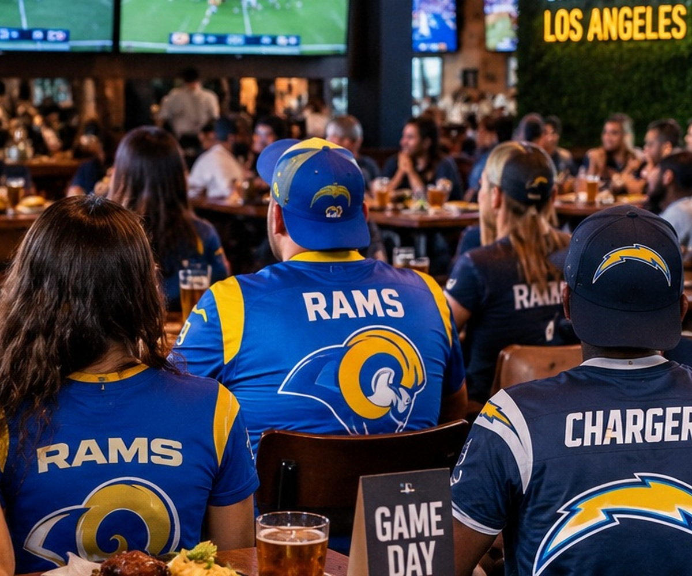

NFL Sundays Are Back
Four weeks into the NFL season, Los Angeles already has two very different stories, a Rams comeback and a Chargers team searching for its first win.

NFL Sundays are back, and four weeks into the season there is already plenty to follow. The early games start the conversation, the afternoon window keeps it going, and by Sunday night fans have spent most of the day watching scores change, checking fantasy teams, and figuring out which teams might actually be good this year.
Los Angeles already has two very different stories
The Rams came out of Week 4 at 2 and 2 after a dramatic 24 to 20 comeback win in Philadelphia. They trailed by 10 points in the fourth quarter before Kyren Williams scored twice in the final four minutes. It was the kind of win that can change the mood around a team that had not looked as sharp as expected through the first month.
The Chargers are dealing with the opposite feeling. Their 30 to 23 loss in Seattle dropped them to 0 and 4. Justin Herbert threw for 189 yards, one touchdown, and two interceptions, and the Chargers are still looking for the win that can reset their season.
Sunday football is bigger than one local team
Los Angeles has Rams fans, Chargers fans, and plenty of people who brought another NFL team with them when they moved here. That makes Sundays a mix of jerseys, rivalries, fantasy football decisions, group chats, and several games playing at the same time.
Some fans are watching every snap. Others are there for the food and the people. Restaurants and sports bars fill up, families build the day around kickoff, and friends settle into the same spot week after week. The routine is part of the fun.
What is coming next for LA
The Chargers return home in Week 5 to face Denver on Sunday, October 11. The Rams get an extra day before hosting Buffalo on Monday night, October 12. After that, the local schedule keeps getting interesting, including a Rams and Chargers matchup at SoFi Stadium on November 1.
There is still a lot of season left. A 2 and 2 start can turn into a run, and an 0 and 4 start makes every upcoming game feel more urgent. That is what makes the first part of the NFL season so interesting. By October, the standings are starting to mean something, but nobody has the whole picture yet.
The Sunday routine is officially back
For the next few months, Sundays have a schedule again. Pick the games, decide where to watch, figure out the food, check the fantasy lineup, and prepare to argue about at least one call before the day is over. NFL Sundays are back.